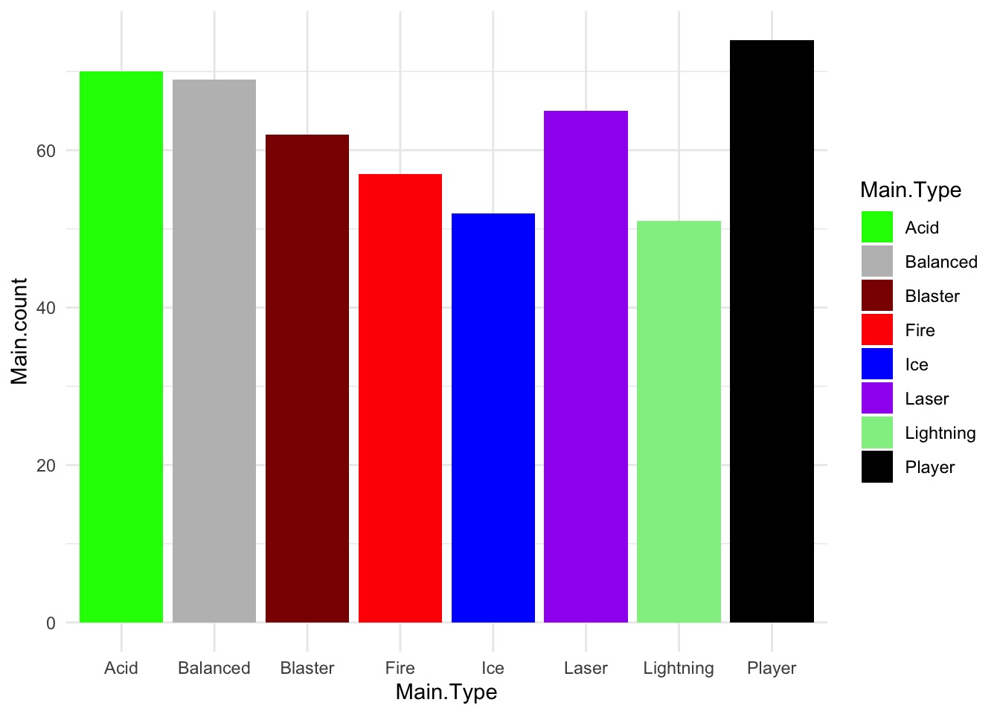
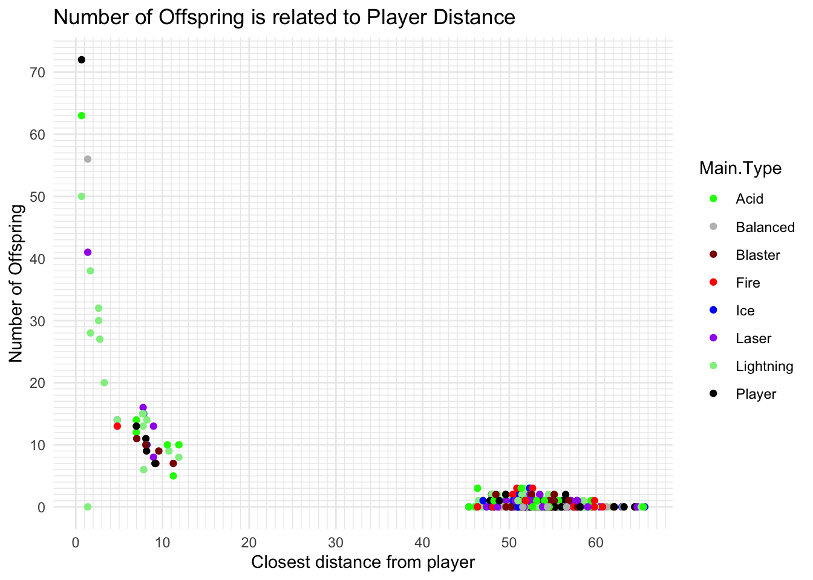
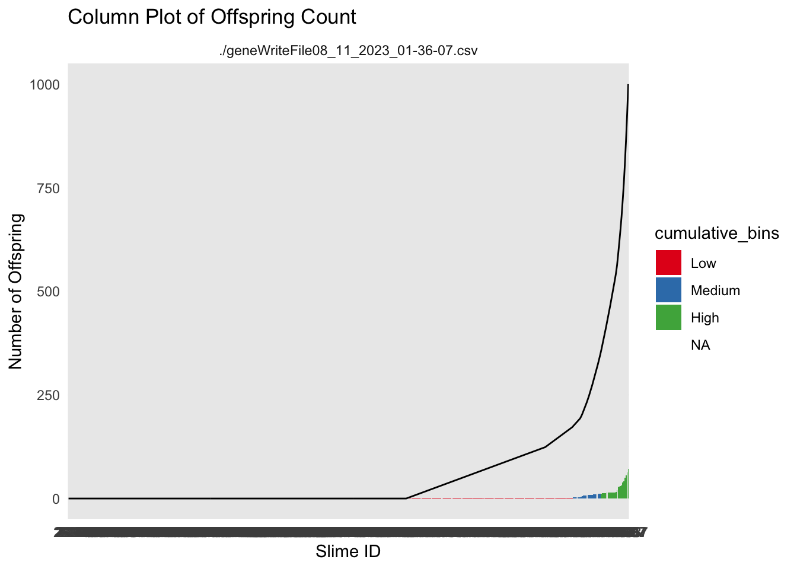

How can we embed Data Literacy exercises for the early game?
TwinStick
Evolution
Data Science
Author
Barrie D. Robison
Published
August 17, 2023
Is it really an Evolutionary game?
When we are developing our games, we perform extensive testing to make sure the underlying biological models are performing as expected. In the case of evolutionary games, we need to test that the population of enemies is indeed adapting the game conditions as we intended. This post is (I hope) the first in a series in which we document those tests.
My hope is that performing these tests in this format will serve as an organized archive of our analyses, improving reproducibility and rigor. I also have a vain glimmer of hope that some person other than me might actually be interested in this topic.
PROJECT TWIN STICK
This is intended to be an evolutionary shooter. The game is described in detail here.
DATA
In this section, we ingest the data from whatever runs are relevant to the analysis. The data are written from the project in .csv files. The following code reads all .csv files from the working directory. It creates new variables for the source file name (file) and the number of offspring produced by each individual (offspring_count). It then appends all the data files into a single data frame called allfiles. I also create a few aggregations of the data by generating mean values of interest (traits, genes, fitness estimates) for each generation in each file (TraitAvg, GeneAvg, FitAvg)
Variables that end in .Gene are the values of the genome for that particular locus. Variables that end in .Trait are the values of the trait for that particular locus. Variables that end in .Fitness are the values of that particular Fitness component.
EXPERIMENTAL CONDITIONS
In this situation, I’m interested in what types of Data Literacy exercises I can incorporate between generations of the game, especially in the first few generations. We often show players time series graphs of trait values over time, but these don’t tend to make much sense until 5 to 10 generations have occurred.
Here, I’m going to explore some visualizations that summarize what happened in the generation that the player most recently completed.
RESULTS
Slime Types
Each Slime has a Main.Type and a Secondary.Type. These types use the ~.Resistance.~ category to confer resistance to the appropriate damage type.
The following code creates two summary dataframes with the suffix ~Typecounts that count the number of slimes of each ~.Type in each generation for each replicate. It then creates the graphs of ~Type frequency over time.
Code
MainTypecounts <- allfiles %>%group_by(Main.Type, Generation, file) %>%summarise(Main.count =n(), .groups ="drop")SecondaryTypecounts <- allfiles %>%group_by(Secondary.Type, Generation, file) %>%summarise(Secondary.count =n(), .groups ="drop")ggplot(MainTypecounts, aes(x = Generation, y = Main.count, fill =as.factor(Main.Type))) +geom_col(position ="stack") +labs(x ="Generation", y ="Count", fill ="Main Slime Type") +theme_minimal()+facet_wrap(~file, ncol=2)
Code
ggplot(SecondaryTypecounts, aes(x = Generation, y = Secondary.count, fill =as.factor(Secondary.Type))) +geom_col(position ="stack") +labs(x ="Generation", y ="Count", fill ="Secondary Slime Type") +theme_minimal()+facet_wrap(~file, ncol=2)
GENERATION 0
You’ve defeated the first generation of slimes! Our sensors indicate that the slimes have different types, that we’ve named Fire, Player, Lightning, Ice, Laser, Acid, Balanced, Blaster.
Here is a graph showing the frequencies of the slime types in the wave you just defeated.
Code
slime_palette <-c("green", "grey", "darkred", "red", "blue", "purple", "lightgreen","black")ggplot(MainTypecounts%>%filter(Generation==0), aes(x=Main.Type, y = Main.count, fill = Main.Type))+geom_col()+scale_fill_manual(values = slime_palette) +theme_minimal()

Frequency of slime type (Main.Type) in the previous wave.
Let’s test your data skills! Based on this graph, what was the most common slime type in the most recent wave?
Great job! I wonder if these slime types have any special characteristics that would affect your strategy?
GENERATION 1
Well done again! You’ve survived another wave of slime attacks. We are collecting more data on these mysterious creatures.
It looks like each wave of slimes is actually the offspring of the previous wave! Our sensors are able to detect the number of offspring that each slime you just defeated will have. Check this out! Here is graph that summarizes the distribution of the number of offspring.
Code
ggplot(allfiles%>%filter(Generation ==1),aes(x = offspring_count)) +geom_histogram(binwidth =1, fill ="blue", color ="black", alpha =0.7) +labs(title ="Histogram of Offspring Count",x ="Number of Offspring",y ="Count") +theme_minimal()+scale_y_continuous(breaks =seq(0, 150, by =10), minor_breaks =seq(0, 150, by =1))+scale_x_continuous(breaks =seq(0, 100, by =10), minor_breaks =seq(0, 100, by =1))
Code
Best <- allfiles%>%filter(Generation==1)
How many slimes do you think will contribute NO offspring to the next wave?
Something to think about: There are a couple slimes that had LOTS of offspring, and one that even had 85 offspring! What made them so special? Why were they able to have so many offspring?
GENERATION 2
That was close! Let’s analyze what is going on! We think we’ve figured out what can explain the difference in the number of offspring! It looks like the slime that get closest to the player tend to have the most babies! Check this out!
Code
ggplot(allfiles%>%filter(Generation ==2),aes(x=Path.Distance.To.Player, y=offspring_count))+geom_point(aes(color=Main.Type))+labs(title ="Number of Offspring is related to Player Distance",x ="Closest distance from player",y ="Number of Offspring") +theme_minimal()+scale_y_continuous(breaks =seq(0, 100, by =10), minor_breaks =seq(0, 100, by =1))+scale_x_continuous(breaks =seq(0, 100, by =10), minor_breaks =seq(0, 100, by =1))+scale_color_manual(values = slime_palette)

Note that these graphs are interactive! You can get all sorts of information from them by hovering or clicking on them! Try to use that approach to figure out the Slime Type of the slime that had the MOST offspring! Was it the same slime that got closest to the player?
GENERATION 3
How are those pesky slimes getting close to you? Let’s look at some of the traits that might explain how they are getting through your defenses.
Scale for fill is already present.
Adding another scale for fill, which will replace the existing scale.
Slime Fitness
In most cases, it is useful to summarize the behavior of the fitness function for each experiment. In this case, the fitness function calculates a value of 50,000/(distance to player +1). I will also reverse calculate that for visualization, showing the actual distance to the player (Path.Distance.To.Player). We then use Roulette Wheel selection to determine the parents of the next generation.
Code
ggplot(allfiles, aes(x=Wave.Number, y= Path.Distance.To.Player))+geom_jitter(aes(x=Wave.Number, y= Path.Distance.To.Player, color = offspring_count, alpha = offspring_count))+geom_smooth()+facet_wrap(~file, ncol =2)+scale_color_continuous(low="blue", high ="red")+ylim(0, 80)
`geom_smooth()` using method = 'gam' and formula = 'y ~ s(x, bs = "cs")'
Warning: Computation failed in `stat_smooth()`
Caused by error in `smooth.construct.cr.smooth.spec()`:
! x has insufficient unique values to support 10 knots: reduce k.
df_sorted <- allfiles %>%filter(Generation ==2) %>%arrange(offspring_count) %>%mutate(Unique.Slime.ID =factor(Unique.Slime.ID, levels = Unique.Slime.ID),cumulative_offspring =cumsum(offspring_count),# Create discrete bins for cumulative_offspring with labelscumulative_bins =cut(cumulative_offspring, breaks =quantile(cumulative_offspring, probs =c(0.5,0.9, 0.95, 1)),labels =c("Low", "Medium", "High")))ggplot(df_sorted, aes(x = Unique.Slime.ID, y = offspring_count)) +geom_col(aes(fill = cumulative_bins)) +geom_line(aes(x=Unique.Slime.ID, y = cumulative_offspring, group =1))+labs(title ="Column Plot of Offspring Count",x ="Slime ID",y ="Number of Offspring") +theme_minimal() +facet_wrap(~file) +scale_fill_brewer(palette ="Set1")

Code
ggplot(df_sorted, aes(x = Unique.Slime.ID, y = cumulative_offspring)) +geom_col(aes(fill = cumulative_bins)) +labs(title ="Column Plot of Offspring Count",x ="Slime ID",y ="Number of Offspring") +theme_minimal() +facet_wrap(~file) +scale_fill_brewer(palette ="Set1")
these plots might be useful as a starting point. The ideas would be to show the player that not all slimes have the same number of babies. Then we would challenge them as to why that is happening.
The next step would be to show them that the number of babies is related to the fitness function of the game. In this case that is how close they get to the player.
Code
ggplot(df_sorted, aes(x = Unique.Slime.ID, y = Path.Distance.To.Player)) +geom_col(aes(fill = offspring_count)) +labs(title ="Column Plot of Path Distance to Player",x ="Slime ID",y ="Path Distance to Player") +theme_minimal() +facet_wrap(~file)
Code
ggplot(df_sorted, aes(x = Path.Distance.To.Player)) +geom_histogram(binwidth =1, fill ="blue", color ="black", alpha =0.7) +labs(title ="Histogram of Path Distance to Player",x ="Path Distance to Player",y ="Count") +theme_minimal()
Code
ggplot(df_sorted, aes(x=Path.Distance.To.Player, y= offspring_count))+geom_point(aes(color = cumulative_offspring))+scale_colour_gradient(low ="blue", high ="red")
Code
ggplot(df_sorted, aes(x=Player.Distance.Fitness, y= offspring_count))+geom_point(aes(color = cumulative_offspring))+scale_colour_gradient(low ="blue", high ="red")
So the closer they get to the player, the more babies they have.
Next, we have to figure out what traits might explain how they are getting so close!
Code
slime_palette <-c("green", "grey", "darkred", "red", "blue", "purple", "lightgreen","black")# Assuming df_sorted is your data frameggplot(df_sorted, aes(x = Main.Type, y = offspring_count)) +geom_jitter(aes(color = Main.Type), width =0.3, height =0) +facet_wrap(~file) +scale_color_manual(values = slime_palette) +theme_minimal()
This would be for slime type. What about the traits?
Evolutionary Responses
To estimate what traits might be under selection, we can calculate selection gradients for each trait. This is essentially the slope of the line between offspring_count and the Trait.
For each Trait, we should also try to understand its individual evolutionary trajectory. Is the population mean for the trait increasing or decreasing?
Since the first thing we are interested in is Damage Resistance conferred by Type, we’ll calculate Lightning resistance directly.
`stat_bin()` using `bins = 30`. Pick better value with `binwidth`.
Code
ggplot(singlegen, aes(x=Turn.Rate.Trait, y = Speed.Trait, color = reproduce))+geom_point()+facet_wrap(~file)
Source Code
---title: "Embedding Data Literacy Content in Project TwinStick"subtitle: "1 - Single Generation Graphs"description: "How can we embed Data Literacy exercises for the early game?"author: "Barrie D. Robison"date: "August 17, 2023"categories: [TwinStick, Evolution, Data Science]code-fold: true code-tools: true---Is it really an *Evolutionary* game?When we are developing our games, we perform extensive testing to make sure the underlying biological models are performing as expected. In the case of evolutionary games, we need to test that the population of enemies is indeed adapting the game conditions as we intended. This post is (I hope) the first in a series in which we document those tests.My hope is that performing these tests in this format will serve as an organized archive of our analyses, improving reproducibility and rigor. I also have a vain glimmer of hope that some person other than me might actually be interested in this topic.## PROJECT TWIN STICKThis is intended to be an evolutionary shooter. The game is described in detail [here](https://professorpolymorphic.github.io/PolymorphicWeb/Games/TwinStick/).## DATAIn this section, we ingest the data from whatever runs are relevant to the analysis. The data are written from the project in `.csv` files. The following code reads all `.csv` files from the working directory. It creates new variables for the source file name (`file`) and the number of offspring produced by each individual (`offspring_count`). It then appends all the data files into a single data frame called `allfiles`. I also create a few aggregations of the data by generating mean values of interest (traits, genes, fitness estimates) for each generation in each file (`TraitAvg`, `GeneAvg`, `FitAvg`)```{r}#| output: falselibrary(tidyverse)library(pheatmap)files <-list.files(pattern ="*.csv", full.names =TRUE)allfiles =data.frame()for(csv in files){ Twin3 <-read.csv(csv, as.is=T, header=T) Twin3['file'] = csvTwin3<-Twin3%>%mutate(Unique.Slime.ID =paste(Wave.Number, ".", Slime.ID))%>%mutate(Unique.Parent.One =paste(Wave.Number-1, ".", Parent.One))%>%mutate(Unique.Parent.Two =paste(Wave.Number-1, ".", Parent.Two))df_parents <- Twin3 %>%select(Unique.Parent.One, Unique.Parent.Two) %>%pivot_longer(cols =everything(), names_to ="parent_type", values_to ="parent_id")# Count the number of offspring for each parentoffspring_counts <- df_parents %>%group_by(parent_id) %>%summarise(offspring_count =n(), .groups ="drop")offspring_counts <- offspring_counts%>%filter(parent_id !="-1 . N/A")offspring_counts<-rename(offspring_counts, Unique.Slime.ID = parent_id)Twin3 <- Twin3 %>%left_join(offspring_counts, by ="Unique.Slime.ID")%>%replace_na(list(offspring_count =0))allfiles<-rbind(allfiles,Twin3)}Traits <-c("Main.Resistance.Trait", "Secondary.Resistance.Trait", "Speed.Trait","Tower.Attraction.Trait", "Slime.Optimal.Distance.Trait", "Turn.Rate.Trait", "Slime.View.Range.Trait", "Tower.View.Range.Trait")Genes <-c("Main.Resistance.Gene", "Secondary.Resistance.Gene", "Speed.Gene","Tower.Attraction.Gene", "Slime.Optimal.Distance.Gene", "Turn.Rate.Gene", "Slime.View.Range.Gene", "Tower.View.Range.Gene")allfiles<-allfiles%>%mutate(Generation=as.factor(Wave.Number))%>%mutate(offspring.count.Fitness = offspring_count)%>%mutate(reproduce =if_else(offspring_count ==0, "N", "Y"))TraitAvg <- allfiles %>%group_by(file, Generation) %>%summarize(across(ends_with("Trait"), mean, na.rm =TRUE))GeneAvg <- allfiles %>%group_by(file, Generation) %>%summarize(across(ends_with("Gene"), list(mean = mean, var = var), na.rm =TRUE, .names ="{.fn}.{.col}"))FitAvg <- allfiles %>%group_by(file, Generation) %>%summarize(across(ends_with("Fitness"), list(mean = mean, var = var), na.rm =TRUE, .names ="{.fn}.{.col}"))allfiles <- allfiles %>%mutate(LResist.Trait =case_when( Main.Type =="Lightning"& Secondary.Type =="Lightning"~1.0, Main.Type =="Lightning"& Secondary.Type !="Lightning"~0.6, Main.Type !="Lightning"& Secondary.Type =="Lightning"~0.4,TRUE~0 ))```The `allfiles` dataframe contains the following variables (I also show a few columns of the example data):```{r}data.dictionary <-t(as.data.frame(head(allfiles)))knitr::kable(data.dictionary)```Variables that end in `.Gene` are the values of the genome for that particular locus. Variables that end in `.Trait` are the values of the trait for that particular locus. Variables that end in `.Fitness` are the values of that particular Fitness component.## EXPERIMENTAL CONDITIONSIn this situation, I'm interested in what types of Data Literacy exercises I can incorporate between generations of the game, especially in the first few generations. We often show players time series graphs of trait values over time, but these don't tend to make much sense until 5 to 10 generations have occurred.Here, I'm going to explore some visualizations that summarize what happened in the generation that the player most recently completed.## RESULTS### Slime TypesEach Slime has a `Main.Type` and a `Secondary.Type`. These types use the `~.Resistance.~` category to confer resistance to the appropriate damage type.The following code creates two summary dataframes with the suffix `~Typecounts` that count the number of slimes of each `~.Type` in each generation for each replicate. It then creates the graphs of `~Type` frequency over time.```{r}MainTypecounts <- allfiles %>%group_by(Main.Type, Generation, file) %>%summarise(Main.count =n(), .groups ="drop")SecondaryTypecounts <- allfiles %>%group_by(Secondary.Type, Generation, file) %>%summarise(Secondary.count =n(), .groups ="drop")ggplot(MainTypecounts, aes(x = Generation, y = Main.count, fill =as.factor(Main.Type))) +geom_col(position ="stack") +labs(x ="Generation", y ="Count", fill ="Main Slime Type") +theme_minimal()+facet_wrap(~file, ncol=2)ggplot(SecondaryTypecounts, aes(x = Generation, y = Secondary.count, fill =as.factor(Secondary.Type))) +geom_col(position ="stack") +labs(x ="Generation", y ="Count", fill ="Secondary Slime Type") +theme_minimal()+facet_wrap(~file, ncol=2)```## GENERATION 0You've defeated the first generation of slimes! Our sensors indicate that the slimes have different types, that we've named `r unique(allfiles$Main.Type)`.Here is a graph showing the frequencies of the slime types in the wave you just defeated.```{r}#| layout-ncol: 1#| fig-cap: #| - "Frequency of slime type (Main.Type) in the previous wave."slime_palette <-c("green", "grey", "darkred", "red", "blue", "purple", "lightgreen","black")ggplot(MainTypecounts%>%filter(Generation==0), aes(x=Main.Type, y = Main.count, fill = Main.Type))+geom_col()+scale_fill_manual(values = slime_palette) +theme_minimal()```Let's test your data skills! Based on this graph, what was the most common slime type in the most recent wave?Great job! I wonder if these slime types have any special characteristics that would affect your strategy?## GENERATION 1Well done again! You've survived another wave of slime attacks. We are collecting more data on these mysterious creatures.It looks like each wave of slimes is actually the offspring of the previous wave! Our sensors are able to detect the number of offspring that each slime you just defeated will have. Check this out! Here is graph that summarizes the distribution of the number of offspring.```{r}ggplot(allfiles%>%filter(Generation ==1),aes(x = offspring_count)) +geom_histogram(binwidth =1, fill ="blue", color ="black", alpha =0.7) +labs(title ="Histogram of Offspring Count",x ="Number of Offspring",y ="Count") +theme_minimal()+scale_y_continuous(breaks =seq(0, 150, by =10), minor_breaks =seq(0, 150, by =1))+scale_x_continuous(breaks =seq(0, 100, by =10), minor_breaks =seq(0, 100, by =1))Best <- allfiles%>%filter(Generation==1)```How many slimes do you think will contribute NO offspring to the next wave?Something to think about: There are a couple slimes that had LOTS of offspring, and one that even had `r max(Best$offspring_count)` offspring! What made them so special? Why were they able to have so many offspring?## GENERATION 2That was close! Let's analyze what is going on! We think we've figured out what can explain the difference in the number of offspring! It looks like the slime that get closest to the player tend to have the most babies! Check this out!```{r}ggplot(allfiles%>%filter(Generation ==2),aes(x=Path.Distance.To.Player, y=offspring_count))+geom_point(aes(color=Main.Type))+labs(title ="Number of Offspring is related to Player Distance",x ="Closest distance from player",y ="Number of Offspring") +theme_minimal()+scale_y_continuous(breaks =seq(0, 100, by =10), minor_breaks =seq(0, 100, by =1))+scale_x_continuous(breaks =seq(0, 100, by =10), minor_breaks =seq(0, 100, by =1))+scale_color_manual(values = slime_palette)```Note that these graphs are interactive! You can get all sorts of information from them by hovering or clicking on them! Try to use that approach to figure out the Slime Type of the slime that had the MOST offspring! Was it the same slime that got closest to the player?## GENERATION 3How are those pesky slimes getting close to you? Let's look at some of the traits that might explain how they are getting through your defenses.```{r}MainTypecounts <- allfiles %>%group_by(Main.Type, Generation, Wave.Number, file) %>%summarise(Main.count =n(), .groups ="drop")SecondaryTypecounts <- allfiles %>%group_by(Secondary.Type, Generation, Wave.Number, file) %>%summarise(Secondary.count =n(), .groups ="drop")ggplot(MainTypecounts%>%filter(Wave.Number<4), aes(x = Generation, y = Main.count, fill =as.factor(Main.Type))) +geom_col(position ="stack") +labs(x ="Generation", y ="Count", fill ="Main Slime Type") +theme_minimal()+facet_wrap(~file, ncol=2)+scale_fill_manual(values = slime_palette)ggplot(MainTypecounts%>%filter(Wave.Number<4), aes(x = Generation, y = Main.count, color =as.factor(Main.Type))) +geom_line(aes(group=Main.Type)) +labs(x ="Generation", y ="Count", fill ="Main Slime Type") +theme_minimal()+facet_wrap(~file, ncol=2)+scale_color_manual(values = slime_palette)ggplot(SecondaryTypecounts%>%filter(Wave.Number<4), aes(x = Generation, y = Secondary.count, fill =as.factor(Secondary.Type))) +geom_col(position ="stack") +labs(x ="Generation", y ="Count", fill ="Secondary Slime Type") +theme_minimal()+facet_wrap(~file, ncol=2)```These graphs will help you understand how the population of slimes is changing over time in response to your defenses.What type of slime is the most common in the last generation?```{r}ggplot(allfiles%>%filter(Generation ==4),aes(x = Main.Type, y = offspring_count)) +geom_jitter(aes(color = Main.Type), width =0.3, height =0) +facet_wrap(~file) +scale_color_manual(values = slime_palette) +theme_minimal()FitAvgType <- allfiles%>%group_by(file, Generation, Wave.Number, Main.Type) %>%summarize(across(ends_with("Fitness"), list(mean = mean, var = var, sum = sum), na.rm =TRUE, .names ="{.fn}.{.col}"))ggplot(FitAvgType%>%filter(Generation ==4),aes(x= Main.Type, y = sum.offspring.count.Fitness))+geom_col()``````{r}df_sorted <- allfiles %>%filter(Generation ==4) %>%arrange(offspring_count) %>%mutate(Unique.Slime.ID =factor(Unique.Slime.ID, levels = Unique.Slime.ID),cumulative_offspring =cumsum(offspring_count),# Create discrete bins for cumulative_offspring with labelscumulative_bins =cut(cumulative_offspring, breaks =quantile(cumulative_offspring, probs =c(0.5,0.9, 0.95, 1)),labels =c("Low", "Medium", "High")))ggplot(df_sorted, aes(x = Unique.Slime.ID, y = offspring_count)) +geom_col(aes(fill = Main.Type)) +labs(title ="Column Plot of Offspring Count",x ="Slimes",y ="Number of Offspring") +theme_minimal() +facet_wrap(~file) +scale_fill_brewer(palette ="Set1")+theme(axis.text.x =element_blank())+scale_fill_manual(values = slime_palette)```## Slime FitnessIn most cases, it is useful to summarize the behavior of the fitness function for each experiment. In this case, the fitness function calculates a value of 50,000/(distance to player +1). I will also reverse calculate that for visualization, showing the actual distance to the player (`Path.Distance.To.Player`). We then use Roulette Wheel selection to determine the parents of the next generation.```{r}ggplot(allfiles, aes(x=Wave.Number, y= Path.Distance.To.Player))+geom_jitter(aes(x=Wave.Number, y= Path.Distance.To.Player, color = offspring_count, alpha = offspring_count))+geom_smooth()+facet_wrap(~file, ncol =2)+scale_color_continuous(low="blue", high ="red")+ylim(0, 80)df_sorted <- allfiles %>%filter(Generation ==2) %>%arrange(offspring_count) %>%mutate(Unique.Slime.ID =factor(Unique.Slime.ID, levels = Unique.Slime.ID),cumulative_offspring =cumsum(offspring_count),# Create discrete bins for cumulative_offspring with labelscumulative_bins =cut(cumulative_offspring, breaks =quantile(cumulative_offspring, probs =c(0.5,0.9, 0.95, 1)),labels =c("Low", "Medium", "High")))ggplot(df_sorted, aes(x = Unique.Slime.ID, y = offspring_count)) +geom_col(aes(fill = cumulative_bins)) +geom_line(aes(x=Unique.Slime.ID, y = cumulative_offspring, group =1))+labs(title ="Column Plot of Offspring Count",x ="Slime ID",y ="Number of Offspring") +theme_minimal() +facet_wrap(~file) +scale_fill_brewer(palette ="Set1")ggplot(df_sorted, aes(x = Unique.Slime.ID, y = cumulative_offspring)) +geom_col(aes(fill = cumulative_bins)) +labs(title ="Column Plot of Offspring Count",x ="Slime ID",y ="Number of Offspring") +theme_minimal() +facet_wrap(~file) +scale_fill_brewer(palette ="Set1")```these plots might be useful as a starting point. The ideas would be to show the player that not all slimes have the same number of babies. Then we would challenge them as to why that is happening.The next step would be to show them that the number of babies is related to the fitness function of the game. In this case that is how close they get to the player.```{r}ggplot(df_sorted, aes(x = Unique.Slime.ID, y = Path.Distance.To.Player)) +geom_col(aes(fill = offspring_count)) +labs(title ="Column Plot of Path Distance to Player",x ="Slime ID",y ="Path Distance to Player") +theme_minimal() +facet_wrap(~file) ggplot(df_sorted, aes(x = Path.Distance.To.Player)) +geom_histogram(binwidth =1, fill ="blue", color ="black", alpha =0.7) +labs(title ="Histogram of Path Distance to Player",x ="Path Distance to Player",y ="Count") +theme_minimal()ggplot(df_sorted, aes(x=Path.Distance.To.Player, y= offspring_count))+geom_point(aes(color = cumulative_offspring))+scale_colour_gradient(low ="blue", high ="red")ggplot(df_sorted, aes(x=Player.Distance.Fitness, y= offspring_count))+geom_point(aes(color = cumulative_offspring))+scale_colour_gradient(low ="blue", high ="red")```So the closer they get to the player, the more babies they have.Next, we have to figure out what traits might explain how they are getting so close!```{r}slime_palette <-c("green", "grey", "darkred", "red", "blue", "purple", "lightgreen","black")# Assuming df_sorted is your data frameggplot(df_sorted, aes(x = Main.Type, y = offspring_count)) +geom_jitter(aes(color = Main.Type), width =0.3, height =0) +facet_wrap(~file) +scale_color_manual(values = slime_palette) +theme_minimal()ggplot(df_sorted, aes(x = Secondary.Type, y = offspring_count)) +geom_jitter(aes(color = Secondary.Type), width =0.3, height =0) +facet_wrap(~file) +scale_color_manual(values = slime_palette) +theme_minimal()```This would be for slime type. What about the traits?## Evolutionary ResponsesTo estimate what traits might be under selection, we can calculate selection gradients for each trait. This is essentially the slope of the line between `offspring_count` and the Trait.For each Trait, we should also try to understand its individual evolutionary trajectory. Is the population mean for the trait increasing or decreasing?Since the first thing we are interested in is Damage Resistance conferred by Type, we'll calculate Lightning resistance directly.```{r}allfiles <- allfiles %>%mutate(LResist.Trait =case_when( Main.Type =="Lightning"& Secondary.Type =="Lightning"~1.0, Main.Type =="Lightning"& Secondary.Type !="Lightning"~0.6, Main.Type !="Lightning"& Secondary.Type =="Lightning"~0.4,TRUE~0 ))traittemp <- allfiles %>%select(Generation, offspring_count, file, LResist.Trait) %>%group_by(Generation, file) %>%mutate(scaleST0 =as.vector(scale(LResist.Trait, center =TRUE))) %>%mutate(scaleST02 = scaleST0 * scaleST0) %>%mutate(Generation =as.numeric(as.character(Generation)))Gradients <- traittemp %>%group_by(Generation, file) %>%do({ model <-lm(offspring_count ~ scaleST0 + scaleST02, data = .)data.frame(Beta =coefficients(model)[2],PB =summary(model)$coef[2, 4],Trait ="LResist.Trait" ) })Gradients <- Gradients %>%mutate(sig =if_else(PB <0.05 , "Y", "N"))TraitAvg <- allfiles %>%group_by(file, Generation) %>%summarize(across(ends_with("Trait"), mean, na.rm =TRUE))df_Gen <- allfiles %>%filter(Generation ==2)ggplot(data = df_Gen, aes(x=LResist.Trait, y = offspring_count))+geom_jitter()ggplot(data = TraitAvg, aes(x =as.numeric(Generation), y = LResist.Trait))+geom_smooth(data = TraitAvg, aes(x =as.numeric(Generation), y = LResist.Trait), method ="loess") +theme(legend.position ="none") +facet_wrap(~file, ncol =2) ggplot(Gradients, aes(x=Generation, y = Beta))+geom_point(aes(color = sig))+geom_smooth(fill="blue")+scale_color_manual(values =c("grey","red"))+geom_hline(yintercept=0, linetype="dashed", color ="black")+theme(legend.position ="none",panel.background =element_blank())```Now we'll perform a similar analysis for the remaining traits.```{r}Gradientslong <-data.frame()for(i inseq_along(Traits)){traittemp<-allfiles%>%select(Generation, offspring_count, file, !!sym(Traits[i]))%>%group_by(Generation, file)%>%mutate(scaleST0 =as.vector(scale(!!sym(Traits[i]), center =TRUE)))%>%mutate(scaleST02 = scaleST0*scaleST0)%>%mutate(Generation =as.numeric(as.character(Generation)))Gradients <- traittemp %>%group_by(Generation, file) %>%do({ model <-lm(offspring_count ~ scaleST0 + scaleST02, data = .)data.frame(Beta =coefficients(model)[2],PB =summary(model)$coef[2, 4],Trait = Traits[i] ) })Gradients <- Gradients %>%mutate(sig =if_else(PB <0.05 , "Y", "N"))Gradientslong <-rbind(Gradientslong, Gradients)G <-ggplot(data = GeneAvg, aes(x =as.numeric(Generation), y =!!sym(Genes[i])))+geom_point(data = allfiles, aes(x =as.numeric(Generation), y =!!sym(Genes[i])), size=0.1, alpha =0.02)+geom_smooth(data = GeneAvg, aes(x =as.numeric(Generation), y =!!sym(paste("mean.",Genes[i], sep ="")), method ="loess")) +theme(legend.position ="none") +facet_wrap(~file, ncol =2) P <-ggplot(data = TraitAvg, aes(x =as.numeric(Generation), y =!!sym(Traits[i])))+geom_smooth(data = TraitAvg, aes(x =as.numeric(Generation), y =!!sym(Traits[i])), method ="loess") +geom_point(data=allfiles, aes(x =as.numeric(Generation), y =!!sym(Traits[i]), color = offspring_count), size =0.5, alpha =0.1)+theme(legend.position ="none") +facet_wrap(~file, ncol =2) S <-ggplot(Gradients, aes(x=Generation, y = Beta))+geom_point(aes(color = sig))+geom_smooth(fill="blue")+scale_color_manual(values =c("grey","red"))+geom_hline(yintercept=0, linetype="dashed", color ="black")+theme(legend.position ="none",panel.background =element_blank())print(G)print(P)print(S)}```## Heatmap```{r}GradMatrix <- Gradientslong %>%select(Generation, Trait, Beta)%>%pivot_wider(names_from = Trait, values_from = Beta)paletteLength <-50myColor <-colorRampPalette(c("blue", "white", "#ED2024"))(paletteLength)# length(breaks) == length(paletteLength) + 1# use floor and ceiling to deal with even/odd length pallettelengthsHeatmap <- GradMatrix %>%ungroup()%>%select(Main.Resistance.Trait, Secondary.Resistance.Trait, Slime.View.Range.Trait, Tower.View.Range.Trait, Tower.Attraction.Trait, Slime.Optimal.Distance.Trait, Speed.Trait, Turn.Rate.Trait)Heatmatrix2 <-as.matrix(Heatmap)myBreaks2 <-c(seq(min(Heatmatrix2), 0, length.out=ceiling(paletteLength/2) +1), seq(max(Heatmatrix2)/paletteLength, max(Heatmatrix2), length.out=floor(paletteLength/2)))heatmap2 =pheatmap(Heatmatrix2,cluster_rows =FALSE, # don't cluster rowscluster_cols =TRUE, # don't cluster columnsclustering_distance_cols ="euclidean",clustering_distance_rows ="euclidean",clustering_method ="complete",color = myColor,breaks = myBreaks2)```## SINGLE GENERATION PLOTS```{r}singlegen <- allfiles %>%filter(Generation ==5)singlegrad <- Gradientslong %>%filter(Generation ==3)ggplot(singlegen, aes(x=Speed.Trait) )+geom_histogram()+facet_grid(reproduce~file)ggplot(singlegen, aes(x=Turn.Rate.Trait) )+geom_histogram()+facet_grid(reproduce~file)ggplot(singlegen, aes(x=Turn.Rate.Trait, y = Speed.Trait, color = reproduce))+geom_point()+facet_wrap(~file)```